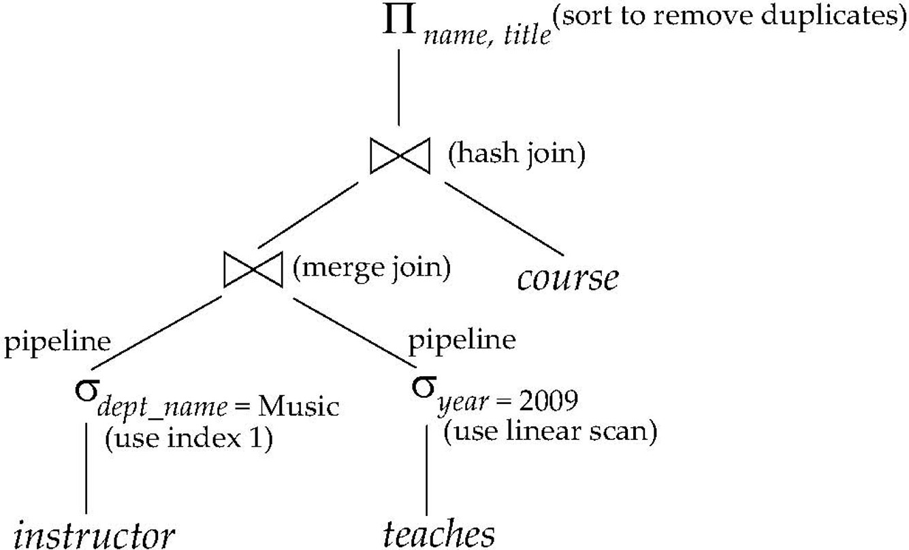
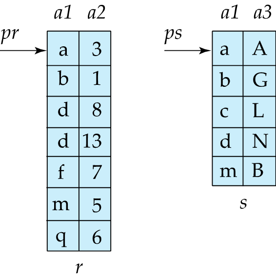
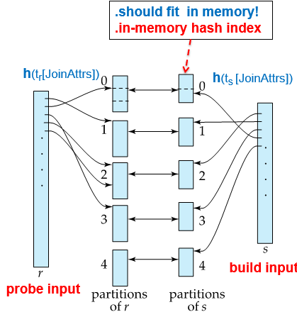
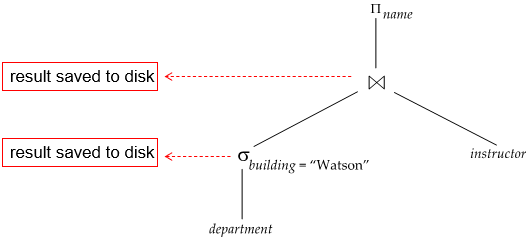

Chapter 15 Query Processing¶
Basic Steps in Query Processing¶
-
Parsing and translation: 查询语句翻译、检查语法并转换为关系代数表达式
-
Optimization: 选择最优的查询执行计划
- 一个简单的优化是：选择运算尽量先做，减少中间结果集的大小
-
Evaluation: 执行查询计划，返回结果
- Evaluation plan: 对每个操作，定义其用于其实现的算法：

- Evaluation plan: 对每个操作，定义其用于其实现的算法：
Measures of Query Cost¶
一般来说就是从提交查询到返回结果的间隔时间，细分的话有disk accesses, CPU 以及网络通信时间等
-
这里主要考虑的是磁盘访问时间：
- number of seeks * average seek time
- number of blocks read * average block read time
- number of blocks written * average block write time
-
简便起见，认为读写时间相同，统一为：
- \(t_T\): time to transfer a block of data
- \(t_S\): time for one seek
- 忽略CPU时间以及中间结果写入磁盘的时间
- 考虑worst case，即最小化可用内存。
Selection Operation¶
File scan¶
A1: linear search
记\(b_r\)为包含关系r的记录的block数量，则： + worst case: \(b_r * t_T + t_S\) 一次定位，读取所有block + average case: 如果是基于 key attribute 的selection，找到就可以停止 \(b_r/2 * t_T + t_S\)
Index scan¶
selection condition must be on search-key of index
A2¶
primary B+ tree index / clustering B+ tree index, equality on key
记树高为\(h_i\)，则： + cost = \((h_i+1) * (t_S + t_T)\) 从根向下二分查找，每层seek一次，搬一个block，加1是要将选出的record所在的block读入内存并seek到具体位置
A3¶
primary B+ tree index / clustering B+ tree index, equality on non-key
不按search-key索引查找，查找结果可能不唯一（但文件中连续存储）
记树高为\(h_i\)，符合条件的records所在的block数量为\(b_r\)，则：
- cost = \(h_i * (t_S + t_T) + t_S + b_r * t_T\)
- 假设记录也按照search-key顺序存储在block中，则只需要一次seek就可以找到第一个符合条件的记录所在的block，之后顺序读取即可
A4¶
secondary B+ tree index, equality on key，对应record只有一条
- cost = \((h_i+1) * (t_S + t_T)\)
A4`¶
secondary B+ tree index, equality on non-key
查找到的是一个指向record的指针集合，可能有多个符合条件的记录。
记符合的record共有n条，n个指针所在的block数量为\(m\)
- cost = \((h_i+m+n)*(t_S + t_T)\)
Selections involving comparisons¶
线性扫描/二分查找/索引都可以实现例如\(\sigma_{A < v}(r)\) 或 \(\sigma_{A > v}(r)\) 这样的selection
A5¶
primary B+ tree index / clustering B+ tree index, comparison(Relation is sorted on A)
-
对于\(\sigma_{A \geq v}(r)\)，可以直接在索引上二分查找，找到第一个符合条件的记录所在的block，之后顺序读取即可:
- cost = \(h_i * (t_S + t_T) + t_S + b_r * t_T\)
-
对于\(\sigma_{A \leq v}(r)\)，从叶节点或者文件中的开头开始线性扫描，直到找到第一个不符合条件的记录为止
A6¶
secondary B+ tree index, comparison
叶节点指向一个指针集合，可能有多个符合条件的记录，文件中不是按顺序存储的。因此定位后直接在叶子节点上顺序扫描即可。
Complex selections¶
Conjuction¶
\(\sigma_{\theta_1 \land \theta_2 \land \cdots \land \theta_n}(r)\)
-
A7: 使用单个索引
- 从前面6个算法中选出一个cost 最小的算法组合，选出符合其中某个条件的所有记录
- 然后放入memory buffer中，检测其他条件
-
A8: 使用多个索引；例如 multiple-key
-
A9: intersection of identifiers 标识符的交集
- 需要带有record pointer的索引
- 对每个条件使用相应的索引，并获取所有指针集合的交集
- 然后从文件中获取记录
- 如果某些条件没有合适的索引，则在内存中进行测试
Sorting¶
我们可以为关系建立索引，然后利用该索引按排序顺序读取关系。这可能导致每个元组都需要一次磁盘块访问
-
对于能够装入内存的关系：快速排序
-
对于无法装入内存的关系，外部排序-归并
External Sort-Merge¶
记M为内存页中的memory size
-
Create sorted runs
读入再写出，总共需要2\(b_r\)次block transfer； 2\(\lceil {b_r/M} \rceil\)次seekfor i = 1 to n do read M blocks of relation into memory sort the in-memory blocks write the sorted data to run Ri -
Merge the sorted runs (N-way merge)
-
若归并段数N < 可用内存页M：只需要一轮merge
- 内存中为每个段分配一个作为buffer input 的 block；为buffer output 分配一个block
- 将每段的第一个block读入buffer page
- 开始循环：
- 选择buffer中最小的记录，输出到buffer output，如果buffer output满了，则将output写入磁盘
- 从input buffer中删掉刚才的记录，如果buffer page 空了而且还有段没有读完，则从该段读入下一个block
- 直到所有段都读完
- 需要2\(b_r\)次block transfer；2\(b_r\)次seek
-
若归并段数N >= 可用内存页M：需要多轮merge
- buffer output 需要单独开一个block，因此每一轮merge M-1段
- 每过一轮，段数减少为原来的\(\lceil \frac{1}{M-1} \rceil\)
- 直到merge成一个段为止
-
cost(simple): 每个段只分配一个block作为buffer input
- block transfer:
- total runs: \(\lceil \frac{b_r}{M} \rceil\)
- total merge passes: \(\lceil \log_{M-1} \frac{b_r}{M} \rceil\)
- 生成归并段时的block transfer: \(2b_r\)；每一轮merge的block transfer也是\(2b_r\)（忽略最后一轮，最后一轮可能不会写到disk中）
- 总的block transfer: \(2b_r + 2b_r (\lceil \log_{M-1} \frac{b_r}{M} \rceil - 1) = b_r (2\lceil \log_{M-1} \frac{b_r}{M} \rceil + 1)\)
- seek:
- 生成归并段时：每一段需要一次读和一次写，总计\(2\lceil \frac{b_r}{M} \rceil\)次seek
- merge时：每一轮需要\(2b_r\)次seek(一次读一次写，最后一次认为不需要写)
- 总的seek: \(2\lceil \frac{b_r}{M} \rceil + 2b_r (\lceil \log_{M-1} \frac{b_r}{M} \rceil - 1) + b_r = 2\lceil \frac{b_r}{M} \rceil + b_r (2\lceil \log_{M-1} \frac{b_r}{M} \rceil + 1)\)
- block transfer:
-
cost(advanced): 每个段分配\(b_b\)个block作为buffer input
- 相应的，每一轮merge的段数为\(\lfloor \frac{N}{b_b} \rfloor - 1\)，
- block transfer: 换个底数
- \(2b_r + 2b_r (\lceil \log_{\lfloor \frac{M}{b_b} \rfloor - 1} \frac{b_r}{M} \rceil - 1) = b_r (2\lceil \log_{\lfloor \frac{M}{b_b} \rfloor - 1} \frac{b_r}{M} \rceil + 1)\)
- seek:
- 生成归并段时：仍是\(2\lceil \frac{b_r}{M} \rceil\)次seek
- merge时：一次进去\(b_b\)个block，每轮 \(2\lceil \frac{b_r}{b_b} \rceil\)次seek(最后一轮只读不写)
- 总的seek: \(2\lceil \frac{b_r}{M} \rceil + \lceil \frac{b_r}{b_b} \rceil(2\lceil \log_{\lfloor \frac{M}{b_b} \rfloor - 1} \frac{b_r}{M} \rceil - 1)\)
-
Join Operation¶
\(r \bowtie_{\theta} s\)
Nested Loop Join¶
元组层级的两层for循环，泛用但是效率低下： + block transfer: \(n_r * b_s + b_r\), 外层每个元组都要将内层的关系读入内存 + seek: \(n_r + b_r\)
Block Nested Loop Join¶
block层级的两层for循环，然后块内元组层级的两层for循环： + worst case: + block transfer: \(b_r * b_s + b_r\) + seek: \(2b_r\)
假设内存中有\(M\)个block：其中一块要作为output buffer + 给外关系r分配\(M-2\)个block作为input buffer；内关系s分配1个block作为input buffer；则： + block transfer: \(\lceil \frac{b_r}{M-2} \rceil * b_s + b_r\) + seek: \(2\lceil \frac{b_r}{M-2} \rceil\)
- best case: 内存足够大/表足够小 => 一次性读入
- block transfer: \(b_r + b_s\)
- seek: \(2\)
显然，小的关系作为外层更优
Index Nested Loop Join¶
内关系有索引，则不用file scan 而可以用索引。 对外关系的每个元组，使用索引查找内关系中符合条件的元组
cost: \(b_r(t_{seek} + t_{transfer}) + n_r * c\)
- 外关系每进一个block，其中每个元组都要在内关系上做索引查找，因此磁头位置一定会变，需要重新定位到外关系的下一个block
- 内关系的索引查找和获取时间为c
Merge Join¶
适用于已经在相关属性上排好序的两个关系

- block transfer: \(b_r + b_s\)
- seek: 需要定量分析最优解，即实际情况下要给两个关系定量分配合适大小的buffer page：
\(X_r + X_s = M\), 要求\(\lceil \frac{b_r}{X_r} \rceil + \lceil \frac{b_s}{X_s} \rceil\)最小
显然当： + \(X_r = \frac{\sqrt{b_r} * M}{\sqrt{b_r} + \sqrt{b_s}}\) + \(X_s = \frac{\sqrt{b_s} * M}{\sqrt{b_r} + \sqrt{b_s}}\) 时，seek次数最小.
Hash Join¶
用相关属性的哈希函数\(h\)将内外关系的元组分拆成\(0, 1, \cdots, n\)组
- 最好能使得每个组的大小可以放到内存中，因此要求
- \(\lceil b_s / M \rceil \leq n\)

分组后只要在相同哈希值的内外组上进行join即可
- 对每一个Partition，都要有对应的buffer block
- 内关系s称为build input，先将其读入内存并建立hash index
- 外关系r称为probe input，加载内关系的分组后，外关系各元组在内存中进行hash index查找
Recursive partitioning¶
如果直接按 \(n\) 分区，但 \( n > M \)，则buffer 不够用，需要递归分区，流程大致如下： 1. 第一次分区： - 对关系 \( s \) 和 \( r \) 用哈希函数 \( h_1 \) 划分为 \( M-1 \) 个分区（\( s_0, s_1, \ldots, s_{M-2} \) 和 \( r_0, r_1, \ldots, r_{M-2} \)）。 2. 递归检查： - 如果某个 \( s_i \) 仍然大于内存 \( M \)，则对其 再用另一个哈希函数 \( h_2 \) 划分为 \( M-1 \) 个子分区。 - 重复此过程，直到所有 \( s_i \) 能完全装入内存。 3. 探测阶段： - 对最终的分区对 \( (r_i, s_i) \) 执行常规 Hash Join（将 \( s_i \) 装入内存，扫描 \( r_i \) 匹配元组）。
如果满足以下条件，则 无需递归分区：
- \(M \geq \lceil \frac{b_s}{M} \rceil + 1\) => $M \geq \sqrt{b_s}
Other Operations¶
Duplication Elimination¶
- sorting 之后扫描去重
- 优化：在局部排序的过程中即可去重
- 也可以hashing
Projection¶
对每个元组都要进行投影操作然后去重
Aggregation¶
-
按照分组的属性进行 sorting / hashing，然后对每组进行聚合
-
也可以在排序时合并的过程中进行聚合：
- 对于count, min/max, sum: 在过程中计数/记录局部最值/求和
- 对于avg: 过程中记录sum 和 count，最后除以count
Evaluation of Expressions¶
对于整个expression tree: + Materialization: 操作中间结果生成一张表

- Pipelining:
- demand driven: 上级需要时，下级执行
- production driven: 下级执行完就向上推
创建日期: 2025年5月27日 22:22:34